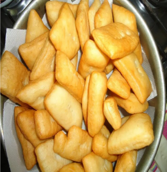
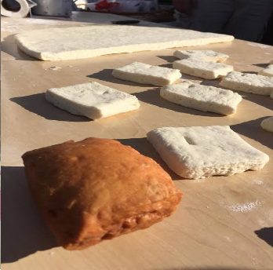

En este artículo vamos a enseñar a cómo hacer tortas fritas y a continuación la manera de cómo hacerlo.

Ingredientes
- Levadura
- Harina 0000
- Agua tibia
- Sal
- Grasa

Materiales
- Taper muy grande
- Palo para masa
- Cuchillo
- Olla con grasa
- Plato con servilletas
- Tenedor (opcional)
Procedimiento
- Primero debemos hacer la masa. Agarras el Taper grande y le pones harina a la masa, pero debes dejar un agujero.
- Después debes dar sal alrededor de la harina y darle un chorro de agua tibia en el medio, también la levadura.
- Tienes que esperar un rato y comenzarás a amasar para que se vea como una masa, debes dar un poco de harina para que no se pegue tanto a la mano y esperar 2 o 1 minutos.
- Cuando terminen esos minutos tienes que amasar un rato y cambiarás con el palo de amasar, para que la masa esté aplastada.
- Cortas la masa en diagonal y prendes la cocina, pones la olla de grasa que se derrite, para poner los pedazos de masa cortadas y deberás esperar que se pongan dorados.
- Sacas la masa con el tenedor, las pones en un plato y luego esperas unos segundos a que se enfríe y has hecho las tortas fritas.
Cierre
Hasta aquí llega el artículo sobre la receta de las tortas fritas y espero que les haya servido.